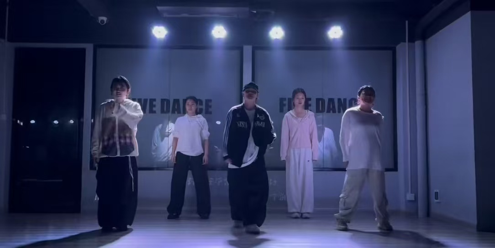
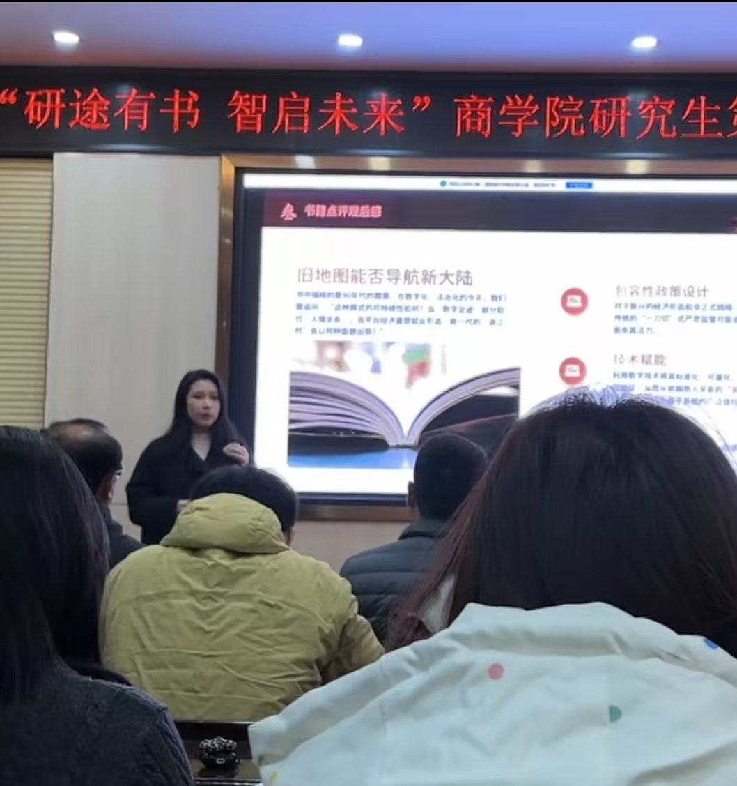
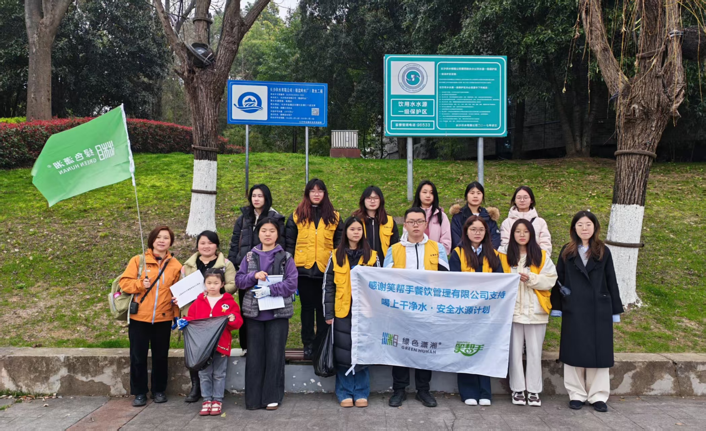
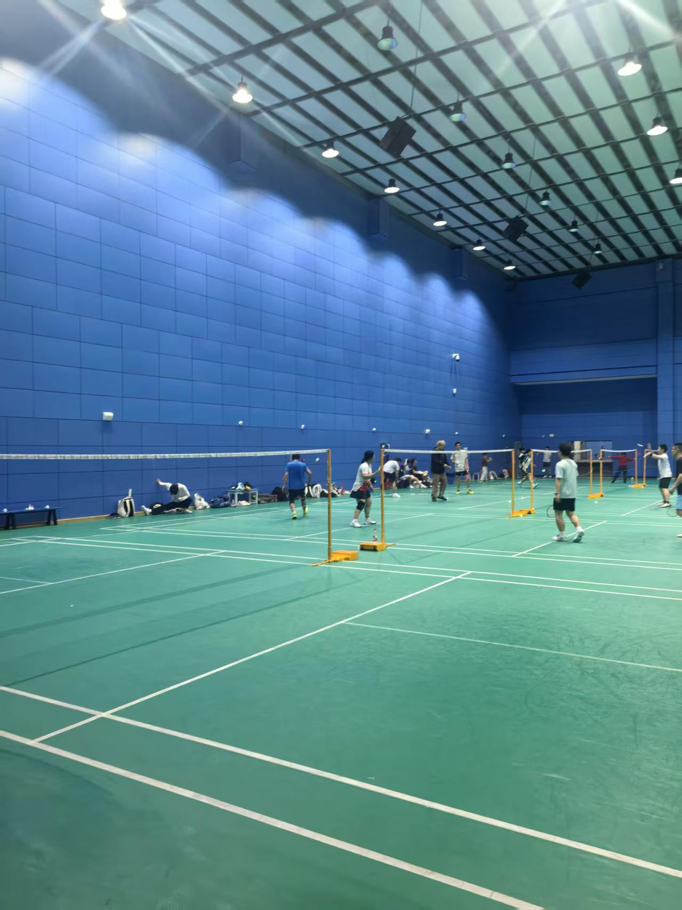

01 / RHYTHM & VOICE
舞蹈与音乐
在排练、演唱和协作里保持专注，也享受身体与声音建立联系的过程。
ABOUT MML
专业构成我的方法，兴趣塑造我的视角。工作之外，我也持续在运动、表达、舞台与志愿行动中理解自己与他人。
Curiosity keeps
the work alive.

在排练、演唱和协作里保持专注，也享受身体与声音建立联系的过程。

把复杂信息整理清楚，用结构、语言和视觉完成一次有效沟通。
NEXT / CONTACT
联系我 聊聊机会，也聊聊下一步。
在真实的服务现场与人协作，把关注落实成具体的陪伴与行动。

在行动中保持开放和能量，让身体、思考与生活持续流动。